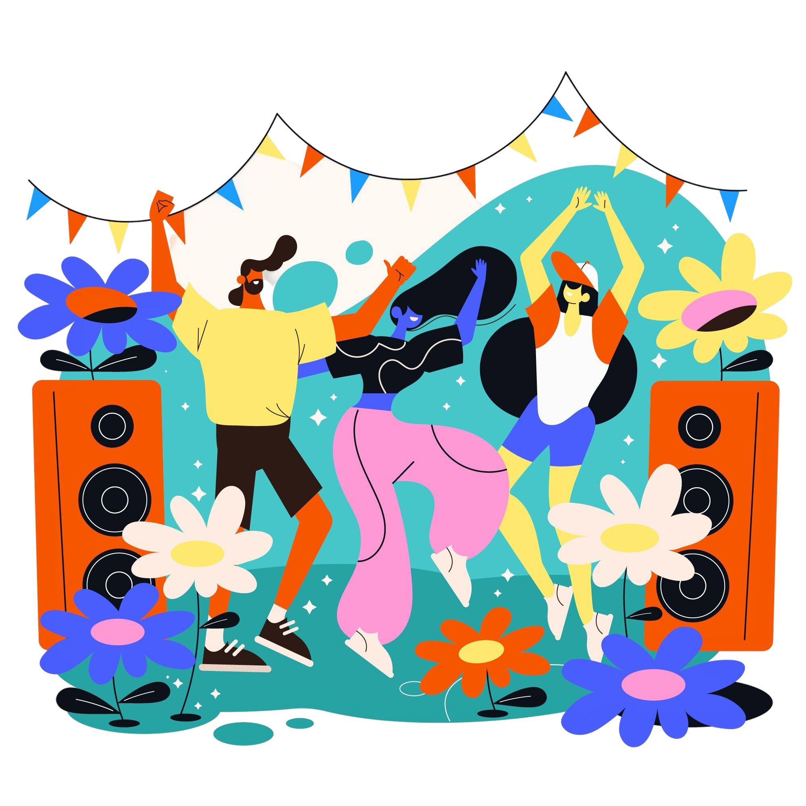

Del 1 al 5 de noviembre / 2025
Medellín - Colombia
VIBRA nace como un punto de encuentro entre culturas, sonidos e historias. Este festival internacional celebra la diversidad creativa a través de la música, el cine y las artes visuales, reuniendo artistas y públicos de diferentes partes del mundo en un mismo escenario. Su propósito es promover el diálogo cultural, impulsar el talento emergente y generar experiencias que conecten a las personas con el poder transformador del arte.

cantautora estadounidense

cineasta, guionista y productor mexicano

artista visual estadounidense
Taylor Swift confirma su participación en el Festival VIBRA
Publicado el: 15 de abril de 2025
La estrella mundial Taylor Swift será la artista principal del concierto inaugural de VIBRA 2025, que se llevará a cabo en Medellín del 1 al 5 de noviembre. Su presentación promete.
VIBRA 2025 promueve la sostenibilidad y el arte responsable
Publicado el: 10 de junio de 2025
El festival contará con una estrategia de sostenibilidad enfocada en el uso de materiales reciclables, transporte compartido y energía renovable. Además, se desarrollarán talleres sobre arte sostenible y reciclaje creativo.
“Un espacio donde el arte, la música y el cine se encuentran para hacer vibrar al mundo.”